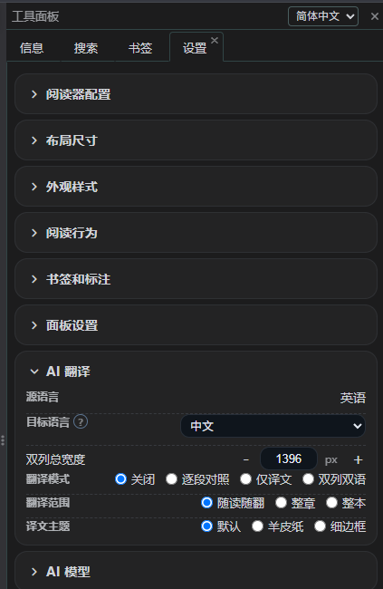

翻译范围与语言
先决定翻译多少内容，再决定翻译成什么语言。

三种范围
| 范围 | 行为 | 适合 |
|---|---|---|
| 跟随阅读 | 读到哪译到哪 | 只想看一部分，或不想一次等太久 |
| 当前章 | 把当前这一章整体翻译 | 要连续读这一章 |
| 整书 | 把整本书都翻译 | 准备从头读到尾 |
范围越大，一次等待的时间越长，消耗也越多；可以先小范围看看效果。
源语言与目标语言
- 源语言：书原本的语言，通常会自动识别。
- 目标语言：要翻译成的语言，必须与源语言不同。
开始翻译
- 打开一本书，在「AI 翻译」分区里设置模式、范围与目标语言。
- 点快捷工具条上的「开始翻译」。
- 在右侧面板「翻译控制台」中可以查看翻译进度。
- 翻译过程中可以继续阅读；已译好的部分会立即显示。